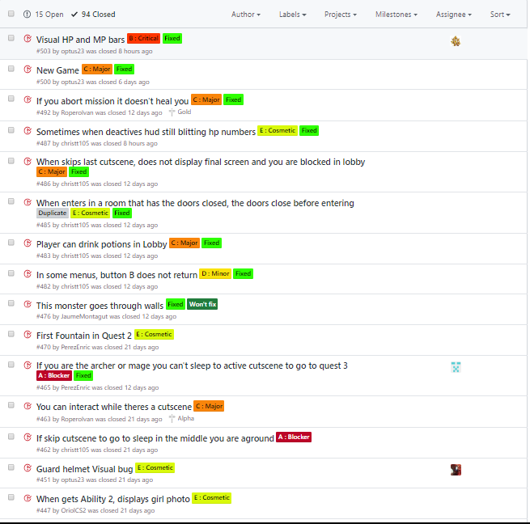
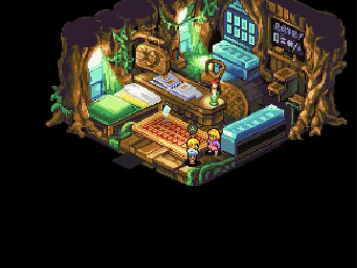
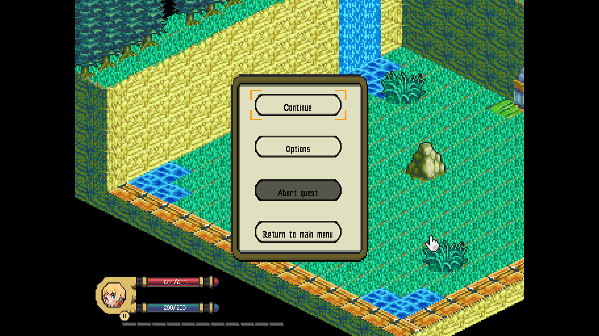
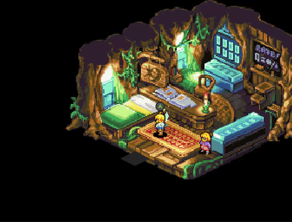
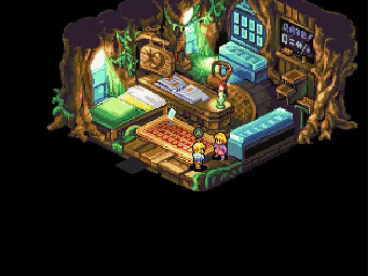
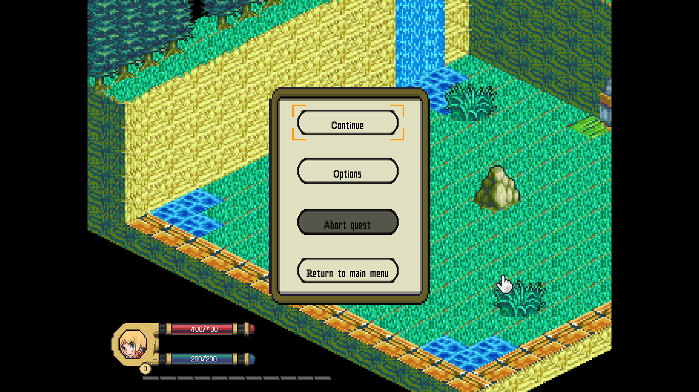
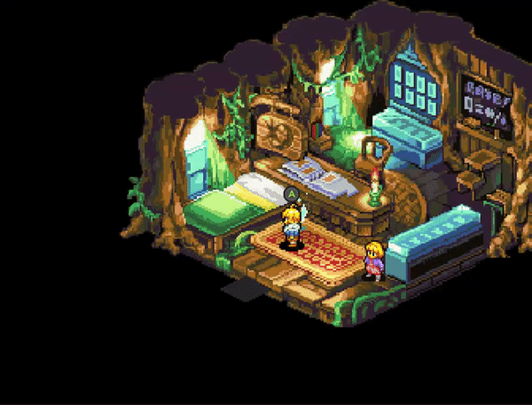
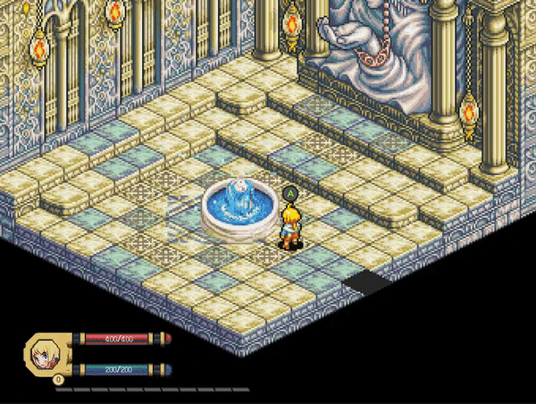
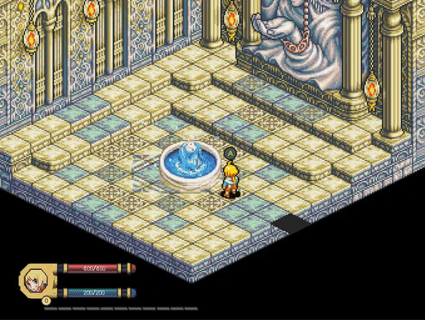

Ivan Ropero García

-
Role: QA
-
Age: 21 y.o.
-
From: Tarragona
-
Github: RoperoIvan
My work
As responsible for QA I worked first in the Issues section, controlling managing and resolving bugs,
Code implementing features in the game (below are specified) and doing each one of the Builds.

The part that has consumed me most time, has been my responsibilities as QA. The place where you can see the work done is mostly the
Issues section in github.
A minimum of 2 builds were normally made weekly. Each of these were posted with their updated readme and changelog, which contained a section of new content added,
changed, bugs fixed and content removed.
As a programmer I have played different parts of the code, both to add new features to the game and update others implemented by my colleagues and
as I had previously commented, also fixing bugs in the code.
I have done all the cutscenes in the game and I have added different functionalities to the code of the cutscenes. Like audio, screen shake, fades, skip button...
 I had to do the Dialog System for the research part of the project, this include the tree structure for the decision dialogs, the UI, karma system and tags systems
that allows the dialogue options to execute actions that affect the game.

The logic and art of the pause menu.

All the system for saving and loading the game.

The potions in the game.
I had to do the Dialog System for the research part of the project, this include the tree structure for the decision dialogs, the UI, karma system and tags systems
that allows the dialogue options to execute actions that affect the game.

The logic and art of the pause menu.

All the system for saving and loading the game.

The potions in the game.
 The debug GodMode.
The debug GodMode.
 The fountain system in the maps.

The Level Up and Experience in the game.
The fountain system in the maps.

The Level Up and Experience in the game.
 The firsts NPCs.
The firsts NPCs.